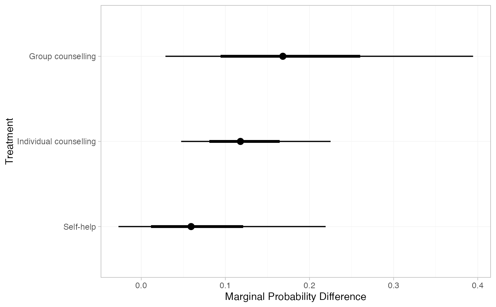
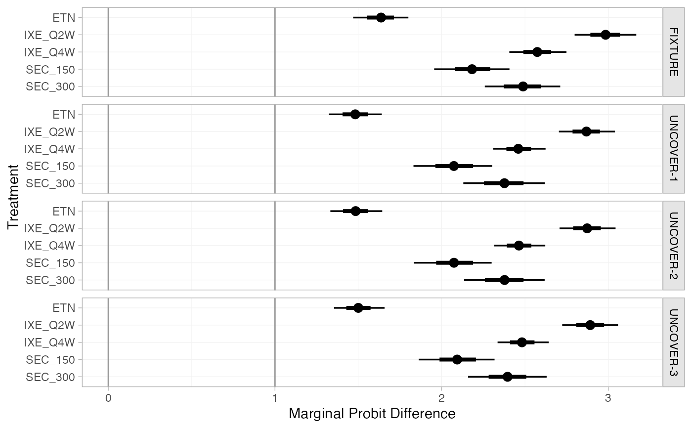
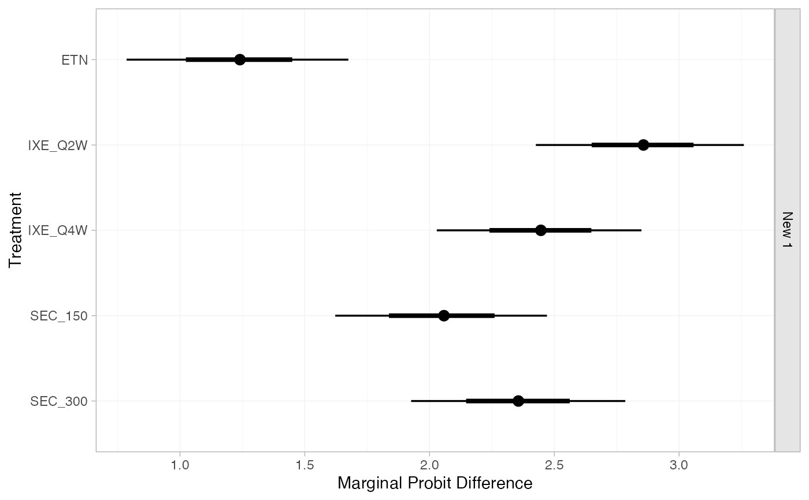
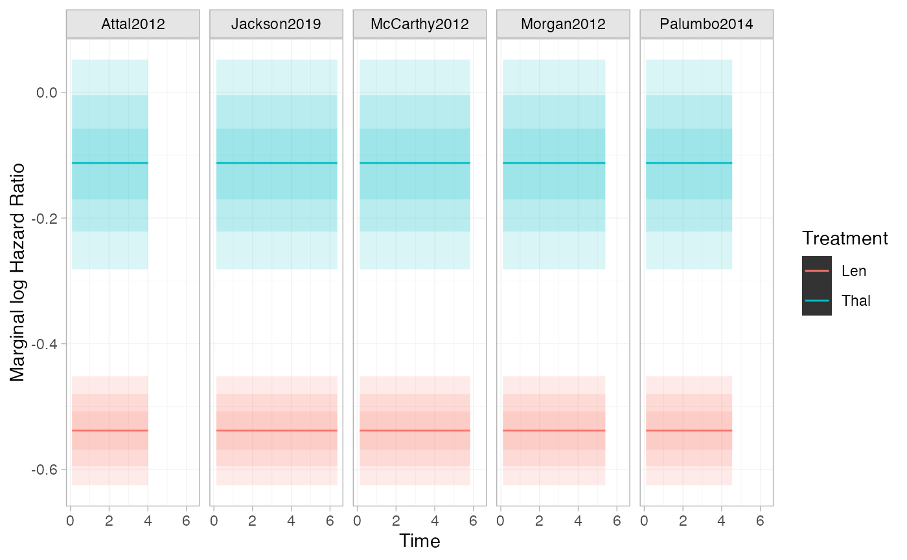
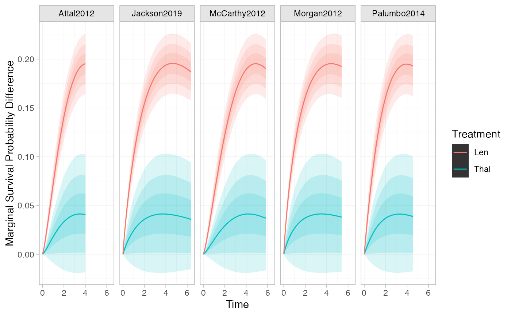

Generate population-average marginal treatment effects. These are formed from
population-average absolute predictions, so this function is a wrapper around
predict.stan_nma().
Arguments
- object
A
stan_nmaobject created bynma().- ...
Arguments passed to
predict.stan_nma(), for example to specify the covariate distribution and baseline risk for a target population, e.g.newdata,baseline, and related arguments. For survival outcomes,typecan also be specified to determine the quantity from which to form a marginal effect. For example,type = "hazard"withmtype = "ratio"produces marginal hazard ratios,type = "median"withmtype = "difference"produces marginal median survival time differences, and so on.- mtype
The type of marginal effect to construct from the average absolute effects, either
"difference"(the default) for a difference of absolute effects such as a risk difference,"ratio"for a ratio of absolute effects such as a risk ratio, or"link"for a difference on the scale of the link function used in fitting the model such as a marginal log odds ratio.- all_contrasts
Logical, generate estimates for all contrasts (
TRUE), or just the "basic" contrasts against the network reference treatment (FALSE)? DefaultFALSE.- trt_ref
Reference treatment to construct relative effects against, if
all_contrasts = FALSE. By default, relative effects will be against the network reference treatment. Coerced to character string.- probs
Numeric vector of quantiles of interest to present in computed summary, default
c(0.025, 0.25, 0.5, 0.75, 0.975)- predictive_distribution
Logical, when a random effects model has been fitted, should the predictive distribution for marginal effects in a new study be returned? Default
FALSE.- summary
Logical, calculate posterior summaries? Default
TRUE.
Value
A nma_summary object if summary = TRUE, otherwise a list
containing a 3D MCMC array of samples and (for regression models) a data
frame of study information.
Examples
## Smoking cessation
# \donttest{
# Run smoking RE NMA example if not already available
if (!exists("smk_fit_RE")) example("example_smk_re", run.donttest = TRUE)
# }
# \donttest{
# Marginal risk difference in each study population in the network
marginal_effects(smk_fit_RE, mtype = "difference")
#> ---------------------------------------------------------------------- Study: 1 ----
#>
#> mean sd 2.5% 25% 50% 75% 97.5% Bulk_ESS
#> marg[1: Group counselling] 0.11 0.07 0.02 0.06 0.10 0.14 0.28 1691
#> marg[1: Individual counselling] 0.07 0.03 0.02 0.05 0.07 0.09 0.15 1258
#> marg[1: Self-help] 0.04 0.04 -0.02 0.01 0.03 0.06 0.14 1524
#> Tail_ESS Rhat
#> marg[1: Group counselling] 2435 1
#> marg[1: Individual counselling] 1989 1
#> marg[1: Self-help] 1918 1
#>
#> ---------------------------------------------------------------------- Study: 2 ----
#>
#> mean sd 2.5% 25% 50% 75% 97.5% Bulk_ESS
#> marg[2: Group counselling] 0.13 0.08 0.02 0.07 0.11 0.17 0.33 2532
#> marg[2: Individual counselling] 0.09 0.05 0.02 0.05 0.08 0.11 0.21 2433
#> marg[2: Self-help] 0.04 0.05 -0.03 0.01 0.03 0.06 0.17 2192
#> Tail_ESS Rhat
#> marg[2: Group counselling] 2532 1
#> marg[2: Individual counselling] 2410 1
#> marg[2: Self-help] 1780 1
#>
#> ---------------------------------------------------------------------- Study: 3 ----
#>
#> mean sd 2.5% 25% 50% 75% 97.5% Bulk_ESS
#> marg[3: Group counselling] 0.17 0.09 0.03 0.10 0.16 0.22 0.37 1567
#> marg[3: Individual counselling] 0.11 0.04 0.04 0.08 0.11 0.14 0.21 1014
#> marg[3: Self-help] 0.06 0.06 -0.03 0.02 0.05 0.09 0.20 1480
#> Tail_ESS Rhat
#> marg[3: Group counselling] 2310 1
#> marg[3: Individual counselling] 1742 1
#> marg[3: Self-help] 1618 1
#>
#> ---------------------------------------------------------------------- Study: 4 ----
#>
#> mean sd 2.5% 25% 50% 75% 97.5% Bulk_ESS
#> marg[4: Group counselling] 0.04 0.04 0.00 0.02 0.03 0.05 0.14 2462
#> marg[4: Individual counselling] 0.03 0.02 0.01 0.01 0.02 0.03 0.07 2270
#> marg[4: Self-help] 0.01 0.02 0.00 0.00 0.01 0.02 0.06 1871
#> Tail_ESS Rhat
#> marg[4: Group counselling] 2209 1
#> marg[4: Individual counselling] 2467 1
#> marg[4: Self-help] 2147 1
#>
#> ---------------------------------------------------------------------- Study: 5 ----
#>
#> mean sd 2.5% 25% 50% 75% 97.5% Bulk_ESS
#> marg[5: Group counselling] 0.16 0.09 0.03 0.10 0.15 0.21 0.38 1572
#> marg[5: Individual counselling] 0.11 0.04 0.04 0.08 0.11 0.14 0.21 993
#> marg[5: Self-help] 0.06 0.06 -0.03 0.02 0.05 0.09 0.20 1480
#> Tail_ESS Rhat
#> marg[5: Group counselling] 2133 1
#> marg[5: Individual counselling] 1542 1
#> marg[5: Self-help] 1678 1
#>
#> ---------------------------------------------------------------------- Study: 6 ----
#>
#> mean sd 2.5% 25% 50% 75% 97.5% Bulk_ESS
#> marg[6: Group counselling] 0.07 0.05 0.01 0.03 0.06 0.09 0.21 2979
#> marg[6: Individual counselling] 0.05 0.03 0.01 0.02 0.04 0.06 0.12 2705
#> marg[6: Self-help] 0.02 0.03 -0.01 0.01 0.02 0.03 0.10 1831
#> Tail_ESS Rhat
#> marg[6: Group counselling] 2760 1
#> marg[6: Individual counselling] 2617 1
#> marg[6: Self-help] 2225 1
#>
#> ---------------------------------------------------------------------- Study: 7 ----
#>
#> mean sd 2.5% 25% 50% 75% 97.5% Bulk_ESS
#> marg[7: Group counselling] 0.09 0.06 0.01 0.05 0.08 0.12 0.25 2047
#> marg[7: Individual counselling] 0.06 0.03 0.02 0.04 0.06 0.08 0.13 1796
#> marg[7: Self-help] 0.03 0.03 -0.01 0.01 0.03 0.05 0.12 1695
#> Tail_ESS Rhat
#> marg[7: Group counselling] 2385 1
#> marg[7: Individual counselling] 2426 1
#> marg[7: Self-help] 1871 1
#>
#> ---------------------------------------------------------------------- Study: 8 ----
#>
#> mean sd 2.5% 25% 50% 75% 97.5% Bulk_ESS
#> marg[8: Group counselling] 0.12 0.08 0.01 0.06 0.10 0.16 0.31 2187
#> marg[8: Individual counselling] 0.08 0.04 0.02 0.05 0.07 0.10 0.17 2108
#> marg[8: Self-help] 0.04 0.05 -0.02 0.01 0.03 0.06 0.16 1757
#> Tail_ESS Rhat
#> marg[8: Group counselling] 2424 1
#> marg[8: Individual counselling] 2224 1
#> marg[8: Self-help] 2168 1
#>
#> ---------------------------------------------------------------------- Study: 9 ----
#>
#> mean sd 2.5% 25% 50% 75% 97.5% Bulk_ESS
#> marg[9: Group counselling] 0.19 0.10 0.03 0.12 0.18 0.25 0.42 1831
#> marg[9: Individual counselling] 0.13 0.05 0.05 0.10 0.13 0.17 0.25 1399
#> marg[9: Self-help] 0.07 0.07 -0.03 0.03 0.06 0.11 0.24 1598
#> Tail_ESS Rhat
#> marg[9: Group counselling] 2231 1
#> marg[9: Individual counselling] 1533 1
#> marg[9: Self-help] 1927 1
#>
#> --------------------------------------------------------------------- Study: 10 ----
#>
#> mean sd 2.5% 25% 50% 75% 97.5% Bulk_ESS
#> marg[10: Group counselling] 0.17 0.09 0.03 0.11 0.16 0.22 0.39 1587
#> marg[10: Individual counselling] 0.12 0.04 0.05 0.09 0.11 0.14 0.22 1030
#> marg[10: Self-help] 0.06 0.06 -0.03 0.02 0.06 0.10 0.21 1474
#> Tail_ESS Rhat
#> marg[10: Group counselling] 2143 1
#> marg[10: Individual counselling] 1460 1
#> marg[10: Self-help] 1712 1
#>
#> --------------------------------------------------------------------- Study: 11 ----
#>
#> mean sd 2.5% 25% 50% 75% 97.5% Bulk_ESS
#> marg[11: Group counselling] 0.06 0.04 0.01 0.03 0.05 0.07 0.15 1716
#> marg[11: Individual counselling] 0.04 0.02 0.01 0.02 0.03 0.04 0.08 1185
#> marg[11: Self-help] 0.02 0.02 -0.01 0.01 0.02 0.03 0.07 1460
#> Tail_ESS Rhat
#> marg[11: Group counselling] 2503 1
#> marg[11: Individual counselling] 1948 1
#> marg[11: Self-help] 1735 1
#>
#> --------------------------------------------------------------------- Study: 12 ----
#>
#> mean sd 2.5% 25% 50% 75% 97.5% Bulk_ESS
#> marg[12: Group counselling] 0.16 0.09 0.02 0.10 0.15 0.21 0.37 1579
#> marg[12: Individual counselling] 0.11 0.04 0.04 0.08 0.10 0.13 0.20 1013
#> marg[12: Self-help] 0.06 0.06 -0.02 0.02 0.05 0.09 0.19 1457
#> Tail_ESS Rhat
#> marg[12: Group counselling] 1851 1
#> marg[12: Individual counselling] 1558 1
#> marg[12: Self-help] 1753 1
#>
#> --------------------------------------------------------------------- Study: 13 ----
#>
#> mean sd 2.5% 25% 50% 75% 97.5% Bulk_ESS
#> marg[13: Group counselling] 0.12 0.08 0.02 0.06 0.10 0.16 0.30 1958
#> marg[13: Individual counselling] 0.08 0.04 0.02 0.05 0.07 0.10 0.17 1578
#> marg[13: Self-help] 0.04 0.05 -0.02 0.01 0.03 0.06 0.16 1666
#> Tail_ESS Rhat
#> marg[13: Group counselling] 2397 1
#> marg[13: Individual counselling] 2300 1
#> marg[13: Self-help] 2017 1
#>
#> --------------------------------------------------------------------- Study: 14 ----
#>
#> mean sd 2.5% 25% 50% 75% 97.5% Bulk_ESS
#> marg[14: Group counselling] 0.14 0.08 0.02 0.08 0.13 0.18 0.34 1573
#> marg[14: Individual counselling] 0.09 0.04 0.03 0.07 0.09 0.12 0.18 1073
#> marg[14: Self-help] 0.05 0.05 -0.02 0.02 0.04 0.08 0.17 1494
#> Tail_ESS Rhat
#> marg[14: Group counselling] 2220 1
#> marg[14: Individual counselling] 1733 1
#> marg[14: Self-help] 1904 1
#>
#> --------------------------------------------------------------------- Study: 15 ----
#>
#> mean sd 2.5% 25% 50% 75% 97.5% Bulk_ESS
#> marg[15: Group counselling] 0.11 0.07 0.01 0.06 0.10 0.15 0.28 2547
#> marg[15: Individual counselling] 0.08 0.05 0.01 0.05 0.07 0.11 0.19 2329
#> marg[15: Self-help] 0.04 0.05 -0.02 0.01 0.03 0.06 0.16 1963
#> Tail_ESS Rhat
#> marg[15: Group counselling] 2560 1
#> marg[15: Individual counselling] 2622 1
#> marg[15: Self-help] 2068 1
#>
#> --------------------------------------------------------------------- Study: 16 ----
#>
#> mean sd 2.5% 25% 50% 75% 97.5% Bulk_ESS
#> marg[16: Group counselling] 0.12 0.07 0.02 0.07 0.11 0.16 0.31 1807
#> marg[16: Individual counselling] 0.08 0.04 0.03 0.06 0.08 0.10 0.17 1319
#> marg[16: Self-help] 0.04 0.04 -0.02 0.02 0.04 0.06 0.15 1497
#> Tail_ESS Rhat
#> marg[16: Group counselling] 2170 1
#> marg[16: Individual counselling] 2013 1
#> marg[16: Self-help] 2044 1
#>
#> --------------------------------------------------------------------- Study: 17 ----
#>
#> mean sd 2.5% 25% 50% 75% 97.5% Bulk_ESS
#> marg[17: Group counselling] 0.14 0.08 0.02 0.09 0.13 0.19 0.34 1566
#> marg[17: Individual counselling] 0.10 0.04 0.04 0.07 0.09 0.12 0.18 1051
#> marg[17: Self-help] 0.05 0.05 -0.02 0.02 0.05 0.08 0.17 1494
#> Tail_ESS Rhat
#> marg[17: Group counselling] 2085 1
#> marg[17: Individual counselling] 1675 1
#> marg[17: Self-help] 1657 1
#>
#> --------------------------------------------------------------------- Study: 18 ----
#>
#> mean sd 2.5% 25% 50% 75% 97.5% Bulk_ESS
#> marg[18: Group counselling] 0.13 0.08 0.02 0.07 0.12 0.17 0.32 1704
#> marg[18: Individual counselling] 0.08 0.04 0.03 0.06 0.08 0.10 0.17 1215
#> marg[18: Self-help] 0.05 0.05 -0.02 0.02 0.04 0.07 0.16 1561
#> Tail_ESS Rhat
#> marg[18: Group counselling] 2200 1
#> marg[18: Individual counselling] 1751 1
#> marg[18: Self-help] 1888 1
#>
#> --------------------------------------------------------------------- Study: 19 ----
#>
#> mean sd 2.5% 25% 50% 75% 97.5% Bulk_ESS
#> marg[19: Group counselling] 0.19 0.10 0.03 0.12 0.18 0.25 0.41 1580
#> marg[19: Individual counselling] 0.13 0.05 0.05 0.10 0.13 0.16 0.24 1005
#> marg[19: Self-help] 0.07 0.07 -0.03 0.03 0.06 0.11 0.23 1496
#> Tail_ESS Rhat
#> marg[19: Group counselling] 2207 1
#> marg[19: Individual counselling] 1779 1
#> marg[19: Self-help] 1811 1
#>
#> --------------------------------------------------------------------- Study: 20 ----
#>
#> mean sd 2.5% 25% 50% 75% 97.5% Bulk_ESS
#> marg[20: Group counselling] 0.11 0.06 0.02 0.06 0.10 0.14 0.27 1537
#> marg[20: Individual counselling] 0.07 0.03 0.03 0.05 0.07 0.09 0.14 1015
#> marg[20: Self-help] 0.04 0.04 -0.01 0.01 0.03 0.06 0.13 1509
#> Tail_ESS Rhat
#> marg[20: Group counselling] 1896 1
#> marg[20: Individual counselling] 1721 1
#> marg[20: Self-help] 1715 1
#>
#> --------------------------------------------------------------------- Study: 21 ----
#>
#> mean sd 2.5% 25% 50% 75% 97.5% Bulk_ESS
#> marg[21: Group counselling] 0.22 0.10 0.04 0.15 0.22 0.29 0.43 2343
#> marg[21: Individual counselling] 0.17 0.06 0.06 0.13 0.17 0.21 0.29 1578
#> marg[21: Self-help] 0.09 0.08 -0.06 0.04 0.08 0.14 0.26 1871
#> Tail_ESS Rhat
#> marg[21: Group counselling] 2323 1
#> marg[21: Individual counselling] 2235 1
#> marg[21: Self-help] 1912 1
#>
#> --------------------------------------------------------------------- Study: 22 ----
#>
#> mean sd 2.5% 25% 50% 75% 97.5% Bulk_ESS
#> marg[22: Group counselling] 0.14 0.08 0.02 0.07 0.12 0.18 0.32 2757
#> marg[22: Individual counselling] 0.10 0.06 0.02 0.06 0.09 0.13 0.23 2425
#> marg[22: Self-help] 0.05 0.05 -0.03 0.02 0.04 0.07 0.19 2324
#> Tail_ESS Rhat
#> marg[22: Group counselling] 2545 1
#> marg[22: Individual counselling] 2672 1
#> marg[22: Self-help] 2079 1
#>
#> --------------------------------------------------------------------- Study: 23 ----
#>
#> mean sd 2.5% 25% 50% 75% 97.5% Bulk_ESS
#> marg[23: Group counselling] 0.14 0.09 0.02 0.08 0.13 0.19 0.35 2646
#> marg[23: Individual counselling] 0.10 0.06 0.02 0.06 0.09 0.13 0.23 2417
#> marg[23: Self-help] 0.05 0.06 -0.03 0.02 0.04 0.08 0.20 1877
#> Tail_ESS Rhat
#> marg[23: Group counselling] 2522 1
#> marg[23: Individual counselling] 2580 1
#> marg[23: Self-help] 2061 1
#>
#> --------------------------------------------------------------------- Study: 24 ----
#>
#> mean sd 2.5% 25% 50% 75% 97.5% Bulk_ESS
#> marg[24: Group counselling] 0.11 0.08 0.01 0.05 0.09 0.14 0.29 2822
#> marg[24: Individual counselling] 0.07 0.05 0.01 0.04 0.06 0.10 0.19 2623
#> marg[24: Self-help] 0.04 0.05 -0.02 0.01 0.03 0.06 0.17 2200
#> Tail_ESS Rhat
#> marg[24: Group counselling] 2591 1
#> marg[24: Individual counselling] 2556 1
#> marg[24: Self-help] 2013 1
#>
# Since there are no covariates in the model, the marginal and conditional
# (log) odds ratios here coincide
marginal_effects(smk_fit_RE, mtype = "link")
#> ---------------------------------------------------------------------- Study: 1 ----
#>
#> mean sd 2.5% 25% 50% 75% 97.5% Bulk_ESS
#> marg[1: Group counselling] 1.11 0.45 0.26 0.82 1.10 1.39 2.05 1541
#> marg[1: Individual counselling] 0.85 0.24 0.39 0.69 0.84 1.01 1.36 985
#> marg[1: Self-help] 0.48 0.41 -0.30 0.22 0.48 0.74 1.32 1483
#> Tail_ESS Rhat
#> marg[1: Group counselling] 2173 1
#> marg[1: Individual counselling] 1773 1
#> marg[1: Self-help] 1676 1
#>
#> ---------------------------------------------------------------------- Study: 2 ----
#>
#> mean sd 2.5% 25% 50% 75% 97.5% Bulk_ESS
#> marg[2: Group counselling] 1.11 0.45 0.26 0.82 1.10 1.39 2.05 1541
#> marg[2: Individual counselling] 0.85 0.24 0.39 0.69 0.84 1.01 1.36 985
#> marg[2: Self-help] 0.48 0.41 -0.30 0.22 0.48 0.74 1.32 1483
#> Tail_ESS Rhat
#> marg[2: Group counselling] 2173 1
#> marg[2: Individual counselling] 1773 1
#> marg[2: Self-help] 1676 1
#>
#> ---------------------------------------------------------------------- Study: 3 ----
#>
#> mean sd 2.5% 25% 50% 75% 97.5% Bulk_ESS
#> marg[3: Group counselling] 1.11 0.45 0.26 0.82 1.10 1.39 2.05 1541
#> marg[3: Individual counselling] 0.85 0.24 0.39 0.69 0.84 1.01 1.36 985
#> marg[3: Self-help] 0.48 0.41 -0.30 0.22 0.48 0.74 1.32 1483
#> Tail_ESS Rhat
#> marg[3: Group counselling] 2173 1
#> marg[3: Individual counselling] 1773 1
#> marg[3: Self-help] 1676 1
#>
#> ---------------------------------------------------------------------- Study: 4 ----
#>
#> mean sd 2.5% 25% 50% 75% 97.5% Bulk_ESS
#> marg[4: Group counselling] 1.11 0.45 0.26 0.82 1.10 1.39 2.05 1541
#> marg[4: Individual counselling] 0.85 0.24 0.39 0.69 0.84 1.01 1.36 985
#> marg[4: Self-help] 0.48 0.41 -0.30 0.22 0.48 0.74 1.32 1483
#> Tail_ESS Rhat
#> marg[4: Group counselling] 2173 1
#> marg[4: Individual counselling] 1773 1
#> marg[4: Self-help] 1676 1
#>
#> ---------------------------------------------------------------------- Study: 5 ----
#>
#> mean sd 2.5% 25% 50% 75% 97.5% Bulk_ESS
#> marg[5: Group counselling] 1.11 0.45 0.26 0.82 1.10 1.39 2.05 1541
#> marg[5: Individual counselling] 0.85 0.24 0.39 0.69 0.84 1.01 1.36 985
#> marg[5: Self-help] 0.48 0.41 -0.30 0.22 0.48 0.74 1.32 1483
#> Tail_ESS Rhat
#> marg[5: Group counselling] 2173 1
#> marg[5: Individual counselling] 1773 1
#> marg[5: Self-help] 1676 1
#>
#> ---------------------------------------------------------------------- Study: 6 ----
#>
#> mean sd 2.5% 25% 50% 75% 97.5% Bulk_ESS
#> marg[6: Group counselling] 1.11 0.45 0.26 0.82 1.10 1.39 2.05 1541
#> marg[6: Individual counselling] 0.85 0.24 0.39 0.69 0.84 1.01 1.36 985
#> marg[6: Self-help] 0.48 0.41 -0.30 0.22 0.48 0.74 1.32 1483
#> Tail_ESS Rhat
#> marg[6: Group counselling] 2173 1
#> marg[6: Individual counselling] 1773 1
#> marg[6: Self-help] 1676 1
#>
#> ---------------------------------------------------------------------- Study: 7 ----
#>
#> mean sd 2.5% 25% 50% 75% 97.5% Bulk_ESS
#> marg[7: Group counselling] 1.11 0.45 0.26 0.82 1.10 1.39 2.05 1541
#> marg[7: Individual counselling] 0.85 0.24 0.39 0.69 0.84 1.01 1.36 985
#> marg[7: Self-help] 0.48 0.41 -0.30 0.22 0.48 0.74 1.32 1483
#> Tail_ESS Rhat
#> marg[7: Group counselling] 2173 1
#> marg[7: Individual counselling] 1773 1
#> marg[7: Self-help] 1676 1
#>
#> ---------------------------------------------------------------------- Study: 8 ----
#>
#> mean sd 2.5% 25% 50% 75% 97.5% Bulk_ESS
#> marg[8: Group counselling] 1.11 0.45 0.26 0.82 1.10 1.39 2.05 1541
#> marg[8: Individual counselling] 0.85 0.24 0.39 0.69 0.84 1.01 1.36 985
#> marg[8: Self-help] 0.48 0.41 -0.30 0.22 0.48 0.74 1.32 1483
#> Tail_ESS Rhat
#> marg[8: Group counselling] 2173 1
#> marg[8: Individual counselling] 1773 1
#> marg[8: Self-help] 1676 1
#>
#> ---------------------------------------------------------------------- Study: 9 ----
#>
#> mean sd 2.5% 25% 50% 75% 97.5% Bulk_ESS
#> marg[9: Group counselling] 1.11 0.45 0.26 0.82 1.10 1.39 2.05 1541
#> marg[9: Individual counselling] 0.85 0.24 0.39 0.69 0.84 1.01 1.36 985
#> marg[9: Self-help] 0.48 0.41 -0.30 0.22 0.48 0.74 1.32 1483
#> Tail_ESS Rhat
#> marg[9: Group counselling] 2173 1
#> marg[9: Individual counselling] 1773 1
#> marg[9: Self-help] 1676 1
#>
#> --------------------------------------------------------------------- Study: 10 ----
#>
#> mean sd 2.5% 25% 50% 75% 97.5% Bulk_ESS
#> marg[10: Group counselling] 1.11 0.45 0.26 0.82 1.10 1.39 2.05 1541
#> marg[10: Individual counselling] 0.85 0.24 0.39 0.69 0.84 1.01 1.36 985
#> marg[10: Self-help] 0.48 0.41 -0.30 0.22 0.48 0.74 1.32 1483
#> Tail_ESS Rhat
#> marg[10: Group counselling] 2173 1
#> marg[10: Individual counselling] 1773 1
#> marg[10: Self-help] 1676 1
#>
#> --------------------------------------------------------------------- Study: 11 ----
#>
#> mean sd 2.5% 25% 50% 75% 97.5% Bulk_ESS
#> marg[11: Group counselling] 1.11 0.45 0.26 0.82 1.10 1.39 2.05 1541
#> marg[11: Individual counselling] 0.85 0.24 0.39 0.69 0.84 1.01 1.36 985
#> marg[11: Self-help] 0.48 0.41 -0.30 0.22 0.48 0.74 1.32 1483
#> Tail_ESS Rhat
#> marg[11: Group counselling] 2173 1
#> marg[11: Individual counselling] 1773 1
#> marg[11: Self-help] 1676 1
#>
#> --------------------------------------------------------------------- Study: 12 ----
#>
#> mean sd 2.5% 25% 50% 75% 97.5% Bulk_ESS
#> marg[12: Group counselling] 1.11 0.45 0.26 0.82 1.10 1.39 2.05 1541
#> marg[12: Individual counselling] 0.85 0.24 0.39 0.69 0.84 1.01 1.36 985
#> marg[12: Self-help] 0.48 0.41 -0.30 0.22 0.48 0.74 1.32 1483
#> Tail_ESS Rhat
#> marg[12: Group counselling] 2173 1
#> marg[12: Individual counselling] 1773 1
#> marg[12: Self-help] 1676 1
#>
#> --------------------------------------------------------------------- Study: 13 ----
#>
#> mean sd 2.5% 25% 50% 75% 97.5% Bulk_ESS
#> marg[13: Group counselling] 1.11 0.45 0.26 0.82 1.10 1.39 2.05 1541
#> marg[13: Individual counselling] 0.85 0.24 0.39 0.69 0.84 1.01 1.36 985
#> marg[13: Self-help] 0.48 0.41 -0.30 0.22 0.48 0.74 1.32 1483
#> Tail_ESS Rhat
#> marg[13: Group counselling] 2173 1
#> marg[13: Individual counselling] 1773 1
#> marg[13: Self-help] 1676 1
#>
#> --------------------------------------------------------------------- Study: 14 ----
#>
#> mean sd 2.5% 25% 50% 75% 97.5% Bulk_ESS
#> marg[14: Group counselling] 1.11 0.45 0.26 0.82 1.10 1.39 2.05 1541
#> marg[14: Individual counselling] 0.85 0.24 0.39 0.69 0.84 1.01 1.36 985
#> marg[14: Self-help] 0.48 0.41 -0.30 0.22 0.48 0.74 1.32 1483
#> Tail_ESS Rhat
#> marg[14: Group counselling] 2173 1
#> marg[14: Individual counselling] 1773 1
#> marg[14: Self-help] 1676 1
#>
#> --------------------------------------------------------------------- Study: 15 ----
#>
#> mean sd 2.5% 25% 50% 75% 97.5% Bulk_ESS
#> marg[15: Group counselling] 1.11 0.45 0.26 0.82 1.10 1.39 2.05 1541
#> marg[15: Individual counselling] 0.85 0.24 0.39 0.69 0.84 1.01 1.36 985
#> marg[15: Self-help] 0.48 0.41 -0.30 0.22 0.48 0.74 1.32 1483
#> Tail_ESS Rhat
#> marg[15: Group counselling] 2173 1
#> marg[15: Individual counselling] 1773 1
#> marg[15: Self-help] 1676 1
#>
#> --------------------------------------------------------------------- Study: 16 ----
#>
#> mean sd 2.5% 25% 50% 75% 97.5% Bulk_ESS
#> marg[16: Group counselling] 1.11 0.45 0.26 0.82 1.10 1.39 2.05 1541
#> marg[16: Individual counselling] 0.85 0.24 0.39 0.69 0.84 1.01 1.36 985
#> marg[16: Self-help] 0.48 0.41 -0.30 0.22 0.48 0.74 1.32 1483
#> Tail_ESS Rhat
#> marg[16: Group counselling] 2173 1
#> marg[16: Individual counselling] 1773 1
#> marg[16: Self-help] 1676 1
#>
#> --------------------------------------------------------------------- Study: 17 ----
#>
#> mean sd 2.5% 25% 50% 75% 97.5% Bulk_ESS
#> marg[17: Group counselling] 1.11 0.45 0.26 0.82 1.10 1.39 2.05 1541
#> marg[17: Individual counselling] 0.85 0.24 0.39 0.69 0.84 1.01 1.36 985
#> marg[17: Self-help] 0.48 0.41 -0.30 0.22 0.48 0.74 1.32 1483
#> Tail_ESS Rhat
#> marg[17: Group counselling] 2173 1
#> marg[17: Individual counselling] 1773 1
#> marg[17: Self-help] 1676 1
#>
#> --------------------------------------------------------------------- Study: 18 ----
#>
#> mean sd 2.5% 25% 50% 75% 97.5% Bulk_ESS
#> marg[18: Group counselling] 1.11 0.45 0.26 0.82 1.10 1.39 2.05 1541
#> marg[18: Individual counselling] 0.85 0.24 0.39 0.69 0.84 1.01 1.36 985
#> marg[18: Self-help] 0.48 0.41 -0.30 0.22 0.48 0.74 1.32 1483
#> Tail_ESS Rhat
#> marg[18: Group counselling] 2173 1
#> marg[18: Individual counselling] 1773 1
#> marg[18: Self-help] 1676 1
#>
#> --------------------------------------------------------------------- Study: 19 ----
#>
#> mean sd 2.5% 25% 50% 75% 97.5% Bulk_ESS
#> marg[19: Group counselling] 1.11 0.45 0.26 0.82 1.10 1.39 2.05 1541
#> marg[19: Individual counselling] 0.85 0.24 0.39 0.69 0.84 1.01 1.36 985
#> marg[19: Self-help] 0.48 0.41 -0.30 0.22 0.48 0.74 1.32 1483
#> Tail_ESS Rhat
#> marg[19: Group counselling] 2173 1
#> marg[19: Individual counselling] 1773 1
#> marg[19: Self-help] 1676 1
#>
#> --------------------------------------------------------------------- Study: 20 ----
#>
#> mean sd 2.5% 25% 50% 75% 97.5% Bulk_ESS
#> marg[20: Group counselling] 1.11 0.45 0.26 0.82 1.10 1.39 2.05 1541
#> marg[20: Individual counselling] 0.85 0.24 0.39 0.69 0.84 1.01 1.36 985
#> marg[20: Self-help] 0.48 0.41 -0.30 0.22 0.48 0.74 1.32 1483
#> Tail_ESS Rhat
#> marg[20: Group counselling] 2173 1
#> marg[20: Individual counselling] 1773 1
#> marg[20: Self-help] 1676 1
#>
#> --------------------------------------------------------------------- Study: 21 ----
#>
#> mean sd 2.5% 25% 50% 75% 97.5% Bulk_ESS
#> marg[21: Group counselling] 1.11 0.45 0.26 0.82 1.10 1.39 2.05 1541
#> marg[21: Individual counselling] 0.85 0.24 0.39 0.69 0.84 1.01 1.36 985
#> marg[21: Self-help] 0.48 0.41 -0.30 0.22 0.48 0.74 1.32 1483
#> Tail_ESS Rhat
#> marg[21: Group counselling] 2173 1
#> marg[21: Individual counselling] 1773 1
#> marg[21: Self-help] 1676 1
#>
#> --------------------------------------------------------------------- Study: 22 ----
#>
#> mean sd 2.5% 25% 50% 75% 97.5% Bulk_ESS
#> marg[22: Group counselling] 1.11 0.45 0.26 0.82 1.10 1.39 2.05 1541
#> marg[22: Individual counselling] 0.85 0.24 0.39 0.69 0.84 1.01 1.36 985
#> marg[22: Self-help] 0.48 0.41 -0.30 0.22 0.48 0.74 1.32 1483
#> Tail_ESS Rhat
#> marg[22: Group counselling] 2173 1
#> marg[22: Individual counselling] 1773 1
#> marg[22: Self-help] 1676 1
#>
#> --------------------------------------------------------------------- Study: 23 ----
#>
#> mean sd 2.5% 25% 50% 75% 97.5% Bulk_ESS
#> marg[23: Group counselling] 1.11 0.45 0.26 0.82 1.10 1.39 2.05 1541
#> marg[23: Individual counselling] 0.85 0.24 0.39 0.69 0.84 1.01 1.36 985
#> marg[23: Self-help] 0.48 0.41 -0.30 0.22 0.48 0.74 1.32 1483
#> Tail_ESS Rhat
#> marg[23: Group counselling] 2173 1
#> marg[23: Individual counselling] 1773 1
#> marg[23: Self-help] 1676 1
#>
#> --------------------------------------------------------------------- Study: 24 ----
#>
#> mean sd 2.5% 25% 50% 75% 97.5% Bulk_ESS
#> marg[24: Group counselling] 1.11 0.45 0.26 0.82 1.10 1.39 2.05 1541
#> marg[24: Individual counselling] 0.85 0.24 0.39 0.69 0.84 1.01 1.36 985
#> marg[24: Self-help] 0.48 0.41 -0.30 0.22 0.48 0.74 1.32 1483
#> Tail_ESS Rhat
#> marg[24: Group counselling] 2173 1
#> marg[24: Individual counselling] 1773 1
#> marg[24: Self-help] 1676 1
#>
relative_effects(smk_fit_RE)
#> mean sd 2.5% 25% 50% 75% 97.5% Bulk_ESS
#> d[Group counselling] 1.11 0.45 0.26 0.82 1.10 1.39 2.05 1541
#> d[Individual counselling] 0.85 0.24 0.39 0.69 0.84 1.01 1.36 985
#> d[Self-help] 0.48 0.41 -0.30 0.22 0.48 0.74 1.32 1483
#> Tail_ESS Rhat
#> d[Group counselling] 2173 1
#> d[Individual counselling] 1773 1
#> d[Self-help] 1676 1
# Marginal risk differences in a population with 67 observed events out of
# 566 individuals on No Intervention, corresponding to a Beta(67, 566 - 67)
# distribution on the baseline probability of response
(smk_rd_RE <- marginal_effects(smk_fit_RE,
baseline = distr(qbeta, 67, 566 - 67),
baseline_type = "response",
mtype = "difference"))
#> mean sd 2.5% 25% 50% 75% 97.5% Bulk_ESS
#> marg[Group counselling] 0.18 0.09 0.03 0.12 0.17 0.23 0.39 1633
#> marg[Individual counselling] 0.12 0.05 0.05 0.09 0.12 0.15 0.23 1064
#> marg[Self-help] 0.07 0.06 -0.03 0.02 0.06 0.10 0.22 1516
#> Tail_ESS Rhat
#> marg[Group counselling] 1981 1
#> marg[Individual counselling] 1497 1
#> marg[Self-help] 1713 1
plot(smk_rd_RE)

# }
## Plaque psoriasis ML-NMR
# \donttest{
# Run plaque psoriasis ML-NMR example if not already available
if (!exists("pso_fit")) example("example_pso_mlnmr", run.donttest = TRUE)
# }
# \donttest{
# Population-average marginal probit differences in each study in the network
(pso_marg <- marginal_effects(pso_fit, mtype = "link"))
#> ---------------------------------------------------------------- Study: FIXTURE ----
#>
#> mean sd 2.5% 25% 50% 75% 97.5% Bulk_ESS Tail_ESS
#> marg[FIXTURE: ETN] 1.63 0.09 1.46 1.57 1.63 1.69 1.81 4667 3372
#> marg[FIXTURE: IXE_Q2W] 2.98 0.10 2.79 2.91 2.98 3.05 3.18 5771 2999
#> marg[FIXTURE: IXE_Q4W] 2.57 0.09 2.40 2.51 2.57 2.63 2.76 6186 3034
#> marg[FIXTURE: SEC_150] 2.18 0.12 1.96 2.10 2.18 2.26 2.41 5182 3277
#> marg[FIXTURE: SEC_300] 2.48 0.12 2.24 2.40 2.48 2.56 2.72 5837 3102
#> Rhat
#> marg[FIXTURE: ETN] 1
#> marg[FIXTURE: IXE_Q2W] 1
#> marg[FIXTURE: IXE_Q4W] 1
#> marg[FIXTURE: SEC_150] 1
#> marg[FIXTURE: SEC_300] 1
#>
#> -------------------------------------------------------------- Study: UNCOVER-1 ----
#>
#> mean sd 2.5% 25% 50% 75% 97.5% Bulk_ESS Tail_ESS
#> marg[UNCOVER-1: ETN] 1.48 0.08 1.33 1.43 1.48 1.54 1.64 4877 3637
#> marg[UNCOVER-1: IXE_Q2W] 2.87 0.09 2.70 2.81 2.87 2.93 3.04 5915 3036
#> marg[UNCOVER-1: IXE_Q4W] 2.46 0.08 2.31 2.41 2.46 2.52 2.63 6139 3017
#> marg[UNCOVER-1: SEC_150] 2.07 0.12 1.85 1.99 2.07 2.15 2.31 5511 3259
#> marg[UNCOVER-1: SEC_300] 2.37 0.13 2.13 2.28 2.37 2.46 2.62 6283 3304
#> Rhat
#> marg[UNCOVER-1: ETN] 1
#> marg[UNCOVER-1: IXE_Q2W] 1
#> marg[UNCOVER-1: IXE_Q4W] 1
#> marg[UNCOVER-1: SEC_150] 1
#> marg[UNCOVER-1: SEC_300] 1
#>
#> -------------------------------------------------------------- Study: UNCOVER-2 ----
#>
#> mean sd 2.5% 25% 50% 75% 97.5% Bulk_ESS Tail_ESS
#> marg[UNCOVER-2: ETN] 1.48 0.08 1.33 1.43 1.48 1.54 1.64 5000 3568
#> marg[UNCOVER-2: IXE_Q2W] 2.87 0.09 2.70 2.81 2.87 2.93 3.04 5931 3047
#> marg[UNCOVER-2: IXE_Q4W] 2.46 0.08 2.31 2.41 2.46 2.52 2.62 6278 3035
#> marg[UNCOVER-2: SEC_150] 2.07 0.12 1.85 1.99 2.07 2.15 2.30 5578 3381
#> marg[UNCOVER-2: SEC_300] 2.37 0.13 2.13 2.29 2.37 2.46 2.62 6413 3274
#> Rhat
#> marg[UNCOVER-2: ETN] 1
#> marg[UNCOVER-2: IXE_Q2W] 1
#> marg[UNCOVER-2: IXE_Q4W] 1
#> marg[UNCOVER-2: SEC_150] 1
#> marg[UNCOVER-2: SEC_300] 1
#>
#> -------------------------------------------------------------- Study: UNCOVER-3 ----
#>
#> mean sd 2.5% 25% 50% 75% 97.5% Bulk_ESS Tail_ESS
#> marg[UNCOVER-3: ETN] 1.50 0.08 1.35 1.45 1.50 1.55 1.66 4948 3486
#> marg[UNCOVER-3: IXE_Q2W] 2.89 0.09 2.72 2.83 2.89 2.95 3.07 5946 2976
#> marg[UNCOVER-3: IXE_Q4W] 2.48 0.08 2.33 2.43 2.48 2.54 2.64 6522 2884
#> marg[UNCOVER-3: SEC_150] 2.09 0.11 1.87 2.01 2.09 2.17 2.32 5535 3214
#> marg[UNCOVER-3: SEC_300] 2.39 0.12 2.15 2.31 2.39 2.48 2.63 6342 3332
#> Rhat
#> marg[UNCOVER-3: ETN] 1
#> marg[UNCOVER-3: IXE_Q2W] 1
#> marg[UNCOVER-3: IXE_Q4W] 1
#> marg[UNCOVER-3: SEC_150] 1
#> marg[UNCOVER-3: SEC_300] 1
#>
plot(pso_marg, ref_line = c(0, 1))

# Population-average marginal probit differences in a new target population,
# with means and SDs or proportions given by
new_agd_int <- data.frame(
bsa_mean = 0.6,
bsa_sd = 0.3,
prevsys = 0.1,
psa = 0.2,
weight_mean = 10,
weight_sd = 1,
durnpso_mean = 3,
durnpso_sd = 1
)
# We need to add integration points to this data frame of new data
# We use the weighted mean correlation matrix computed from the IPD studies
new_agd_int <- add_integration(new_agd_int,
durnpso = distr(qgamma, mean = durnpso_mean, sd = durnpso_sd),
prevsys = distr(qbern, prob = prevsys),
bsa = distr(qlogitnorm, mean = bsa_mean, sd = bsa_sd),
weight = distr(qgamma, mean = weight_mean, sd = weight_sd),
psa = distr(qbern, prob = psa),
cor = pso_net$int_cor,
n_int = 64)
# Population-average marginal probit differences of achieving PASI 75 in this
# target population, given a Normal(-1.75, 0.08^2) distribution on the
# baseline probit-probability of response on Placebo (at the reference levels
# of the covariates), are given by
(pso_marg_new <- marginal_effects(pso_fit,
mtype = "link",
newdata = new_agd_int,
baseline = distr(qnorm, -1.75, 0.08)))
#> ------------------------------------------------------------------ Study: New 1 ----
#>
#> mean sd 2.5% 25% 50% 75% 97.5% Bulk_ESS Tail_ESS Rhat
#> marg[New 1: ETN] 1.23 0.23 0.77 1.08 1.24 1.39 1.66 6636 3342 1
#> marg[New 1: IXE_Q2W] 2.85 0.22 2.41 2.70 2.85 2.99 3.26 7104 2799 1
#> marg[New 1: IXE_Q4W] 2.44 0.21 2.01 2.30 2.44 2.58 2.84 7637 3247 1
#> marg[New 1: SEC_150] 2.04 0.22 1.60 1.90 2.05 2.19 2.46 6701 2957 1
#> marg[New 1: SEC_300] 2.35 0.22 1.90 2.20 2.35 2.49 2.77 6791 3125 1
#>
plot(pso_marg_new)

# }
## Progression free survival with newly-diagnosed multiple myeloma
# \donttest{
# Run newly-diagnosed multiple myeloma example if not already available
if (!exists("ndmm_fit")) example("example_ndmm", run.donttest = TRUE)
# }
# \donttest{
# We can produce a range of marginal effects from models with survival
# outcomes, specified with the mtype and type arguments. For example:
# Marginal survival probability difference at 5 years, all contrasts
marginal_effects(ndmm_fit, type = "survival", mtype = "difference",
times = 5, all_contrasts = TRUE)
#> -------------------------------------------------------------- Study: Attal2012 ----
#>
#> .time mean sd 2.5% 25% 50% 75% 97.5%
#> marg[Attal2012: Len vs. Pbo, 1] 5 0.19 0.02 0.16 0.18 0.19 0.20 0.22
#> marg[Attal2012: Thal vs. Pbo, 1] 5 0.04 0.03 -0.02 0.02 0.04 0.06 0.10
#> marg[Attal2012: Thal vs. Len, 1] 5 -0.15 0.03 -0.21 -0.17 -0.15 -0.13 -0.08
#> Bulk_ESS Tail_ESS Rhat
#> marg[Attal2012: Len vs. Pbo, 1] 5044 3067 1
#> marg[Attal2012: Thal vs. Pbo, 1] 5217 2970 1
#> marg[Attal2012: Thal vs. Len, 1] 5256 2885 1
#>
#> ------------------------------------------------------------ Study: Jackson2019 ----
#>
#> .time mean sd 2.5% 25% 50% 75%
#> marg[Jackson2019: Len vs. Pbo, 1] 5 0.20 0.02 0.16 0.18 0.20 0.21
#> marg[Jackson2019: Thal vs. Pbo, 1] 5 0.04 0.03 -0.02 0.02 0.04 0.06
#> marg[Jackson2019: Thal vs. Len, 1] 5 -0.15 0.03 -0.22 -0.18 -0.16 -0.13
#> 97.5% Bulk_ESS Tail_ESS Rhat
#> marg[Jackson2019: Len vs. Pbo, 1] 0.23 4991 3016 1
#> marg[Jackson2019: Thal vs. Pbo, 1] 0.10 5201 2854 1
#> marg[Jackson2019: Thal vs. Len, 1] -0.09 5241 2925 1
#>
#> ----------------------------------------------------------- Study: McCarthy2012 ----
#>
#> .time mean sd 2.5% 25% 50% 75%
#> marg[McCarthy2012: Len vs. Pbo, 1] 5 0.20 0.02 0.16 0.18 0.20 0.21
#> marg[McCarthy2012: Thal vs. Pbo, 1] 5 0.04 0.03 -0.02 0.02 0.04 0.06
#> marg[McCarthy2012: Thal vs. Len, 1] 5 -0.15 0.03 -0.22 -0.18 -0.15 -0.13
#> 97.5% Bulk_ESS Tail_ESS Rhat
#> marg[McCarthy2012: Len vs. Pbo, 1] 0.23 5033 3042 1
#> marg[McCarthy2012: Thal vs. Pbo, 1] 0.10 5207 2943 1
#> marg[McCarthy2012: Thal vs. Len, 1] -0.08 5240 2964 1
#>
#> ------------------------------------------------------------- Study: Morgan2012 ----
#>
#> .time mean sd 2.5% 25% 50% 75%
#> marg[Morgan2012: Len vs. Pbo, 1] 5 0.19 0.02 0.16 0.18 0.19 0.21
#> marg[Morgan2012: Thal vs. Pbo, 1] 5 0.04 0.03 -0.02 0.02 0.04 0.06
#> marg[Morgan2012: Thal vs. Len, 1] 5 -0.15 0.03 -0.22 -0.18 -0.15 -0.13
#> 97.5% Bulk_ESS Tail_ESS Rhat
#> marg[Morgan2012: Len vs. Pbo, 1] 0.23 4994 3067 1
#> marg[Morgan2012: Thal vs. Pbo, 1] 0.10 5243 2876 1
#> marg[Morgan2012: Thal vs. Len, 1] -0.09 5232 2919 1
#>
#> ------------------------------------------------------------ Study: Palumbo2014 ----
#>
#> .time mean sd 2.5% 25% 50% 75%
#> marg[Palumbo2014: Len vs. Pbo, 1] 5 0.19 0.02 0.16 0.18 0.19 0.20
#> marg[Palumbo2014: Thal vs. Pbo, 1] 5 0.04 0.03 -0.02 0.02 0.04 0.06
#> marg[Palumbo2014: Thal vs. Len, 1] 5 -0.15 0.03 -0.21 -0.17 -0.15 -0.13
#> 97.5% Bulk_ESS Tail_ESS Rhat
#> marg[Palumbo2014: Len vs. Pbo, 1] 0.22 4844 3004 1
#> marg[Palumbo2014: Thal vs. Pbo, 1] 0.10 5273 2855 1
#> marg[Palumbo2014: Thal vs. Len, 1] -0.08 5225 2965 1
#>
# Marginal difference in RMST up to 5 years
marginal_effects(ndmm_fit, type = "rmst", mtype = "difference", times = 5)
#> -------------------------------------------------------------- Study: Attal2012 ----
#>
#> .time mean sd 2.5% 25% 50% 75% 97.5% Bulk_ESS
#> marg[Attal2012: Len, 1] 5 0.69 0.06 0.58 0.65 0.69 0.73 0.80 4819
#> marg[Attal2012: Thal, 1] 5 0.15 0.11 -0.07 0.08 0.15 0.23 0.38 5210
#> Tail_ESS Rhat
#> marg[Attal2012: Len, 1] 3167 1
#> marg[Attal2012: Thal, 1] 2814 1
#>
#> ------------------------------------------------------------ Study: Jackson2019 ----
#>
#> .time mean sd 2.5% 25% 50% 75% 97.5% Bulk_ESS
#> marg[Jackson2019: Len, 1] 5 0.74 0.06 0.62 0.70 0.74 0.78 0.86 4930
#> marg[Jackson2019: Thal, 1] 5 0.17 0.12 -0.08 0.08 0.16 0.25 0.41 5235
#> Tail_ESS Rhat
#> marg[Jackson2019: Len, 1] 2947 1
#> marg[Jackson2019: Thal, 1] 2855 1
#>
#> ----------------------------------------------------------- Study: McCarthy2012 ----
#>
#> .time mean sd 2.5% 25% 50% 75% 97.5% Bulk_ESS
#> marg[McCarthy2012: Len, 1] 5 0.64 0.06 0.53 0.60 0.64 0.68 0.75 5068
#> marg[McCarthy2012: Thal, 1] 5 0.15 0.11 -0.07 0.07 0.14 0.22 0.35 5220
#> Tail_ESS Rhat
#> marg[McCarthy2012: Len, 1] 2947 1
#> marg[McCarthy2012: Thal, 1] 2808 1
#>
#> ------------------------------------------------------------- Study: Morgan2012 ----
#>
#> .time mean sd 2.5% 25% 50% 75% 97.5% Bulk_ESS
#> marg[Morgan2012: Len, 1] 5 0.76 0.06 0.65 0.72 0.76 0.80 0.88 4965
#> marg[Morgan2012: Thal, 1] 5 0.17 0.13 -0.08 0.09 0.17 0.26 0.42 5195
#> Tail_ESS Rhat
#> marg[Morgan2012: Len, 1] 3167 1
#> marg[Morgan2012: Thal, 1] 2852 1
#>
#> ------------------------------------------------------------ Study: Palumbo2014 ----
#>
#> .time mean sd 2.5% 25% 50% 75% 97.5% Bulk_ESS
#> marg[Palumbo2014: Len, 1] 5 0.75 0.06 0.63 0.71 0.75 0.80 0.88 5099
#> marg[Palumbo2014: Thal, 1] 5 0.17 0.12 -0.08 0.08 0.16 0.25 0.41 5201
#> Tail_ESS Rhat
#> marg[Palumbo2014: Len, 1] 3174 1
#> marg[Palumbo2014: Thal, 1] 2855 1
#>
# Marginal median survival time ratios
marginal_effects(ndmm_fit, type = "median", mtype = "ratio")
#> -------------------------------------------------------------- Study: Attal2012 ----
#>
#> mean sd 2.5% 25% 50% 75% 97.5% Bulk_ESS Tail_ESS
#> marg[Attal2012: Len] 1.52 0.06 1.41 1.47 1.51 1.55 1.64 4463 3156
#> marg[Attal2012: Thal] 1.09 0.07 0.96 1.05 1.09 1.14 1.24 5163 2917
#> Rhat
#> marg[Attal2012: Len] 1
#> marg[Attal2012: Thal] 1
#>
#> ------------------------------------------------------------ Study: Jackson2019 ----
#>
#> mean sd 2.5% 25% 50% 75% 97.5% Bulk_ESS Tail_ESS
#> marg[Jackson2019: Len] 1.78 0.09 1.62 1.72 1.78 1.84 1.96 4597 2983
#> marg[Jackson2019: Thal] 1.13 0.10 0.95 1.06 1.13 1.20 1.35 5217 2831
#> Rhat
#> marg[Jackson2019: Len] 1
#> marg[Jackson2019: Thal] 1
#>
#> ----------------------------------------------------------- Study: McCarthy2012 ----
#>
#> mean sd 2.5% 25% 50% 75% 97.5% Bulk_ESS Tail_ESS
#> marg[McCarthy2012: Len] 1.52 0.06 1.41 1.48 1.52 1.56 1.65 4959 3043
#> marg[McCarthy2012: Thal] 1.09 0.07 0.96 1.05 1.09 1.14 1.25 5171 2851
#> Rhat
#> marg[McCarthy2012: Len] 1
#> marg[McCarthy2012: Thal] 1
#>
#> ------------------------------------------------------------- Study: Morgan2012 ----
#>
#> mean sd 2.5% 25% 50% 75% 97.5% Bulk_ESS Tail_ESS
#> marg[Morgan2012: Len] 1.85 0.10 1.66 1.78 1.84 1.92 2.06 5281 3367
#> marg[Morgan2012: Thal] 1.14 0.11 0.94 1.07 1.14 1.21 1.37 5172 2895
#> Rhat
#> marg[Morgan2012: Len] 1
#> marg[Morgan2012: Thal] 1
#>
#> ------------------------------------------------------------ Study: Palumbo2014 ----
#>
#> mean sd 2.5% 25% 50% 75% 97.5% Bulk_ESS Tail_ESS
#> marg[Palumbo2014: Len] 1.70 0.10 1.53 1.63 1.70 1.76 1.91 4744 3091
#> marg[Palumbo2014: Thal] 1.12 0.09 0.95 1.06 1.12 1.18 1.33 5165 2877
#> Rhat
#> marg[Palumbo2014: Len] 1
#> marg[Palumbo2014: Thal] 1
#>
# Marginal log hazard ratios
# With no covariates in the model, these are constant over time and study
# populations, and are equal to the log hazard ratios from relative_effects()
plot(marginal_effects(ndmm_fit, type = "hazard", mtype = "link"),
# The hazard is infinite at t=0 in some studies, giving undefined logHRs at t=0
na.rm = TRUE)

# The NDMM vignette demonstrates the production of time-varying marginal
# hazard ratios from a ML-NMR model that includes covariates, see
# `vignette("example_ndmm")`
# Marginal survival difference over time
plot(marginal_effects(ndmm_fit, type = "survival", mtype = "difference"))

# }